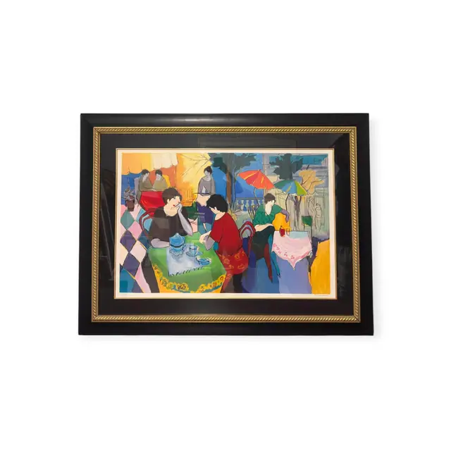
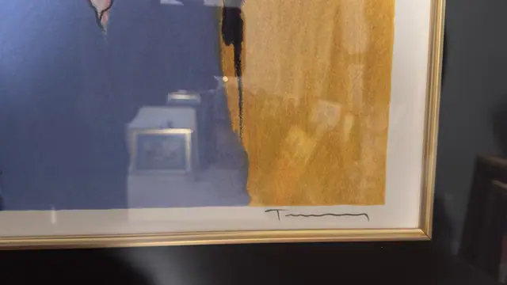
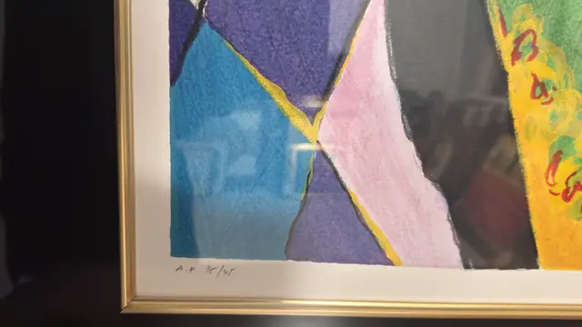
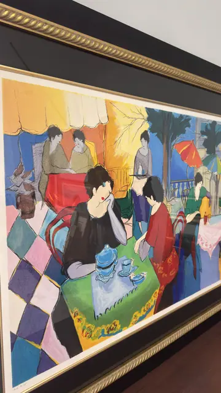

Paintings & Prints
Cafe Terrace Ladies Serigraph Artist Proof, Numbered Edition, Framed
Unknown · late 20th to early 21st century
Price Upon Request




About the Item
A bright cafe interior seen across a chequerboard floor of pink, cream, slate and teal diamonds. In the foreground a woman in a black top rests her chin on her hand at a lime-green cloth table set with a blue teapot and cups, while a companion in a red patterned jacket leans in beside her. Behind them a yellow awning, a scarlet-clothed table and a tall window open onto blue foliage, a coral parasol and a pale balustrade. The figures are drawn with long necks, sharp bobbed hair and blank ovoid faces; the colour is laid in flat, softly grained fields typical of screenprinting on textured paper. Medium: serigraph (screenprint) on paper. Signed lower right margin, in pencil. Edition: A.P. 35/45 (artist's proof, pencil). Inscribed on the reverse or mount: A.P. 35/45. Condition: Sheet looks clean and bright with no foxing or waviness visible; heavy reflections on the glass. Frame in good order.
Details
- Creator:
- Unknown
- Creation Year:
- late 20th to early 21st century
- Dimensions:
- Height: 40.0 in (101.6 cm)
Width: 52.25 in (132.72 cm)
outside of frame - Medium:
- serigraph (screenprint) on paper
- Edition:
- A.P. 35/45 (artist's proof, pencil)
- Period:
- 21St
- Condition:
- Offered in the condition shown in the photographs.
- Reference Number:
- VO-96
- Documentation:
- no certificate photographed
- Gallery Location:
- A.P. 35/45